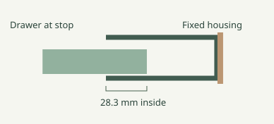

Enclosed side pockets
A continuous floor, roof and outer cheek guide each drawer. At the stop, 28 mm of the drawer remains inside. Pull the keeper from the outside to remove the drawer. Each fixed sleeve takes one screw into the plywood.

The three triangular pencil cubbies remain open. See their positions.
First cell
Press the separate feet onto the two rims of a bare core. Put the feet on a shelf against the plywood backboard. Slide the drawer into the core.
Download first cellTry a foot pair · Parts and installation
The example uses four #8 × ¾″ pan-head wood screws: two in the wall mounts and one in each side housing. All drawers are one piece. Print the main drawers round face down and the gap pockets open side up.